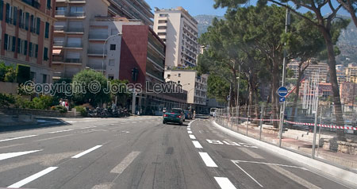The
starting grid.
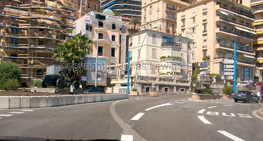First
sharp right hand turn. The track is in the left lane on this picture (still
turning right).
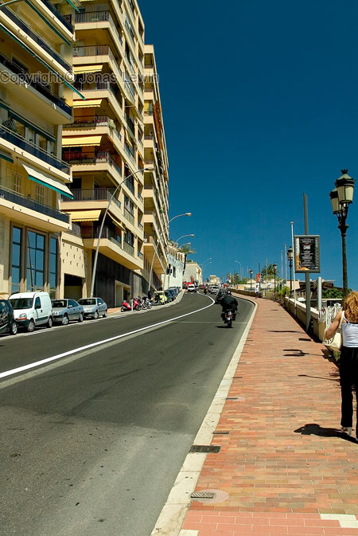Up
the hill after the first corner.
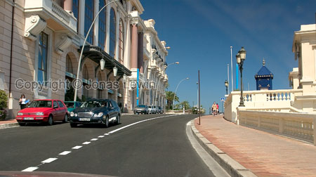Still
up the hill.
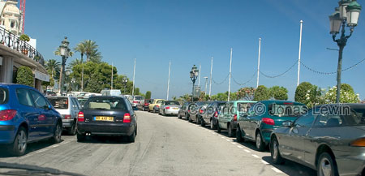Around
the top of the hill, turning sharp left. Just before the casino right hand
turn (which I have no photo of).
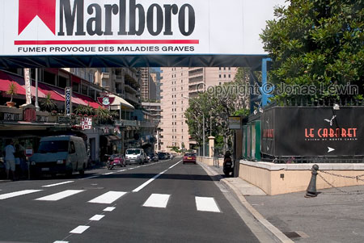The
casino straight The commercial signs are left there all year round I guess.
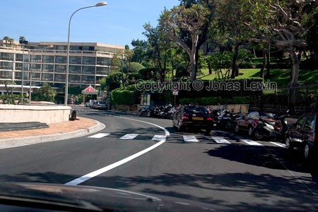After
the casino straight, there is a right hand turn. This is somewhat after the
turn...
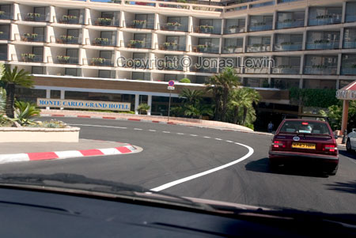...which
is leading to the hairpin.
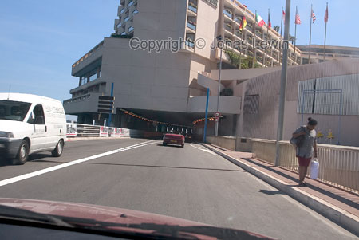After
the hairpin, there's a roundabout which you exit on the right. This road
leads to the tunnel.
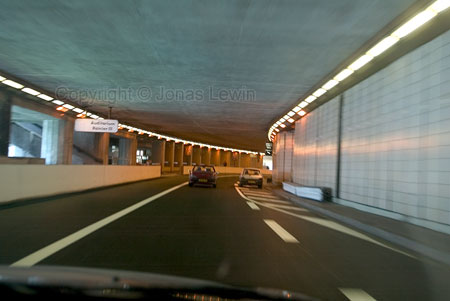Inside
the tunnel. (They have quite a few of these type of tunnels in Monte Carlo).
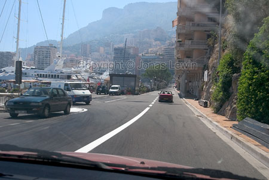After
the tunnel, there should be the road where you have to slow down, to enter
the dubble chicane. On this picture you see the white large car driving on
that small detour.
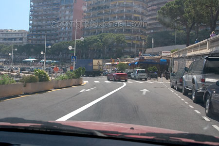After
completing the small detour, it's time to make a left (or you will end up in
the newspaper stand).
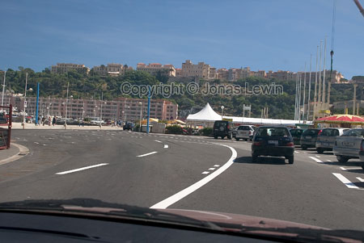The
first S-curve.
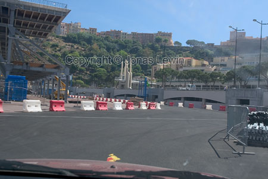The
second S-curve..
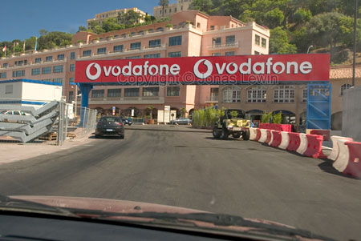You
have to make a right after the sign.
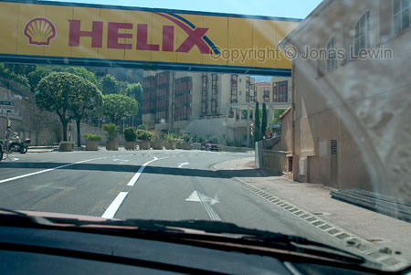After
that you need to make another sharp right turn. Shouldn't the pit-lane be
here some where?.
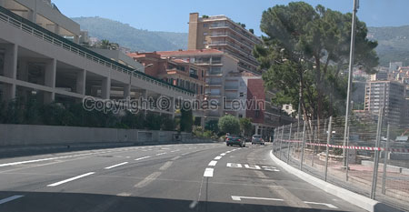We
are back on the starting grid/finishing straight.
Here are some other photos, not including the track.
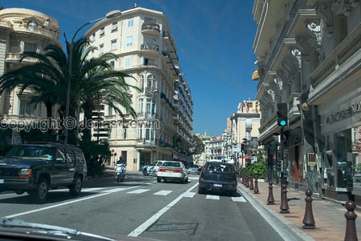Just
a normal street in Monte Carlo. It's not that expensive as I've heard here.
Corsica was much more expensive.
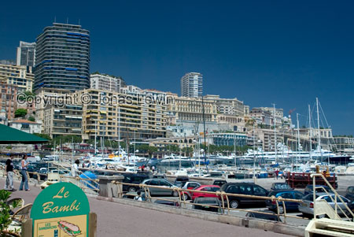The
harbor. There are many expensive ships in the harbor, and the people owning
them are probably extremely rich. Walking in the harbor is quite nice for
about 30 minutes. Then it just ends.
 And
a day in Monaco is not complete without seeing atleast one expensive
Ferrari. I saw a lamboghini and a few porches too at the casino, and driving
in the city.
And
a day in Monaco is not complete without seeing atleast one expensive
Ferrari. I saw a lamboghini and a few porches too at the casino, and driving
in the city.